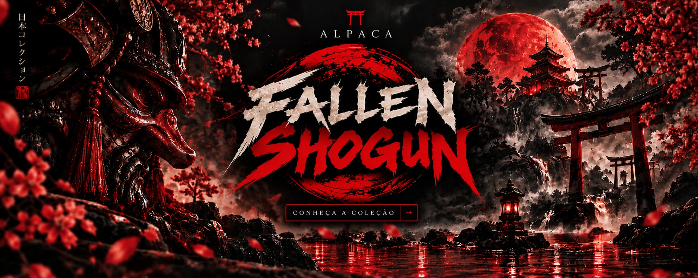

Streetwear / Criciúma, SC
Curadoria. Drops. Atitude.ALPACA
Essencial é
o que permanece.
Somos a Alpaca. Uma marca de streetwear feita de escolhas, detalhes e presença. Cada coleção abre um novo capítulo do nosso universo.
Encontre a sua coleçãoUma marca. Diferentes histórias.Explore o universo Alpaca ↓
Os nossos capítulos
Escolha o seu universo.
Cada coleção tem a sua identidade.
Entre para descobrir os detalhes.



A nossa identidade
Reconhecer
nos detalhes.
Da assinatura na LINE às artes de Fallen Shogun, a Alpaca explora diferentes formas de vestir uma ideia. A coleção muda. A atenção ao detalhe permanece.
Conheça o conceito →Além das peças
O nosso olhar.
As pessoas, a atitude e a atmosfera
por trás da Alpaca.


15 perspectivas da nossa campanha.
Explorar nossas fotos ↗Continue no nosso universo
O próximo detalhe
é seu.
Conheça as coleções e consulte tamanhos e disponibilidade com a marca.